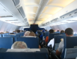

Credits to Flickr
Once you get onto the plane, look at your boarding pass again. It will say your seat number in the form of a number and a letter (i.e. 17A). To find your seat number effectively, look for the row number first, and then determine where your seat is in that row.
On a smaller plane, such as a Boeing 737, the rows will have 6 seats, with 3 on each side and an aisle running down the middle. The seats will be typically labeled A through F. A,B, and C are usually on the right, while D,E, and F are usually on the left. A and F are closest to the window, B and E are in the middle, and C and D are closest to the aisle. You can find more information about this model of airplane here
For larger planes, such as the Airbus A350-900, the seat layout is a little different. Instead of 6 seats, these planes have 9 seats per row, labeled A through I, and two aisles. A,B and C are the closest to the right, D, E, and F are in the middle, and G, H, and I are the closest to the left. A and I are window seats, C, D, F and G are aisle seats, and B, E, and H are middle seats.You can find more information about this model of airplane here
If you are still struggling to find your seat, talk to the flight attendents. They know the layout of the plane very well, and can get you to your seat pretty quickly.
While safety features may differ from airline to airline, airplanes are all required to have certain similar safety features in order to be able to be used to transport passengers. The flight attendents will walk around, demonstrating the safety features and how to use them in case of an emergency.
To start, all airplanes have seatbelts with the same latching method. To secure an airplane seatbelt, insert the buckle into the latch and pull the loose end to tighten. To release the seatbelt, simply lift the latch. If the seatbelt doesn't fit around you, or is practically strangling you with out tight it is, feel free to ask the flight attendents for a seatbelt extension.
Airlines are also required to have lifejackets in case of a water landing. To access the lifejacket in an emergency, reach under your seat and pull the red tab. Put the lifejacket over your head, use the straps to secure it around your waist, and inflate it by either pulling down on the red string or blowing into the tube. For children who weigh less than 35 pounds, wrap the lifejacket around their waist and use the straps to secure it around their legs.
If cabin pressure drops, oxygen masks will drop from the ceiling. If this happens, grab a mask and put it on. Oxygen will be flowing, even if the bag doesn't inflate. Be sure to secure your own mask before helping others.
There will multiple emergency exits on your plane. The location of the emergency exits varies depending on the model and size of the plane. Be sure to look at the safety card on the seat in front of you to see where the emergency exits are. If you are sitting in the row where the emergency exit is, you may be asked to help open the door during emergencies. If you can't, or are unwilling to do this, ask the flight attendants for a new seat.
Before your plane leaves, makes sure to put your phone in airplane mode. You can do this by going into your device's settings, going into airplane mode, and switching it on. This is necessary, because your phone could interfere with the plane's ability to communicate with air traffic control, which can be very dangerous.
If you have a carry-on bag, you will have to store it in one of the overhead bins during the flights. These overhead bins are located above your seat, and have to be opened by the flight attendants only for safety purposes. When putting your bag in an overhead bin, make sure to place it so that it takes up as little space as possible so that others can use the bins. Of course, if you can’t or have trouble with putting your bag in the overhead bin, feel free to ask one of the flight attendants or another passenger for help.
When traveling on an airplane, it’s important to be considerate of others. Some flights can take a very long time, and having someone next to you being super inconsiderate just makes it so much worse.
Firstly, use headphones when you are listening to music or watching shows. I can assure you that no matter how good you think your favorite album is, people will not be happy with you for blasting it at full volume for the duration of the flight. The same goes for your favorite audiobook, movie, TV series, or podcast. Or anything with audio.
When you are opening a beverage, especially at cruising altitude, be sure to open it slowly. The pressure difference between the can and the air around you can cause the drink to spray out of the container and splash onto you and the person you are sitting close to. If you open you drink slowly, some of the pressure is released, lessening the chance that the whole thing will jettison out of the container and into someone's hair.
If you are someone who likes to put their legs up on furniture, please note that the seat in front of you, including its armrests, is not your footrest. It is another seat, and most likely has another passenger in it who will be really upset that you are putting your crusty feet on their chair. If you have to stretch your legs at any time during the flight, wait until the pilot announces that you can stand and then walk a few laps around the plane.
Lastly, try to be as quiet as you can on the flight. If you stim, attempt to do it as quietly as possible. If you or someone you are traveling with is about to have a meltdown, move to another area until they calm down. People aren't always very understanding, and will get upset with you, even for things that aren't your fault.
Of course, not everyone will be respectful. Usually, the most irritating passengers are babies, first-time fliers, and people who are just frustratingly unaware of what's going on around them. No matter how much you want to punch one of these people in the face, it's still important to be kind and respectful to them, and to know how to deal with their annoying behavior.
If you are dealing with an overly chatty person or a crying baby, put your headphones on. Turn on noise canceling, if your headphones have that function, and play some music that is loud enough to cover up most of the noise that the inconsiderate passenger is making. You can also try to tell the other passenger to be quiet, but that doesn't always work, especially if you are dealing with an infant.
When someone is blocking the aisle or your seat, kindly ask them to move out of the way. Most of the time, these people aren't aware that they are blocking you, and will just apologize and move out of the way. However, if the other passenger has mobility issues, then you may need to wait a little while, or call a flight attendant for help.
If someone decides to be extra rude and uses either the back or your chair or your armrests as their footrests, turn around and immediatly tell them to stop it. However, if you want the person to never do that again in their lives, dump a drink on their feet. This is especially effective if the drink is cold and sugary. You may get in trouble with the flight attendants, though.
However, being nice and respectful won't always work. If you are dealing with an exceptionally rude person, chances are that they won't listen to you and just keep being a jerk. When this happens, call a flight attendant over to help you.
With overnight flights, there are some extra things to consider. You will be on the plane for an extended period of time, and have to be stuck with annoying people for much longer. However, the airplane will provide much more ammenities for its travelers.
Airlines will often provide a few options of meals for their passengers. These meals are pre-made, so you can't ask for things to be removed like you can at a restaurant. If you have sensory issues when it comes to food, make sure to look at the menu options before the flight, and if nothing sounds appealing to you, bring enough snacks to hold you over for the duration of your flight.
You will also be given a pillow and a blanket by the airline. However, the blankets are usually pretty thin, and the pillows are small. If you are okay with these things, go ahead and power through the flight with them. But if you would prefer a little extra comfort, pack one of your own pillows and blankets, so long as it doesn't take up too much space.
During the flight, there will be a designated period of time for sleeping. The lights will turn off, and the pilot will tell everyone to be as quiet as they can. Despite all of this, you can't really expect to get a good amount of sleep on the plane. You can't really lay down, the plane engine will still be running, and babies will cry if their ears hurt. Just do your best to get some sleep, and try to get some caffeine after the rest period if you can.